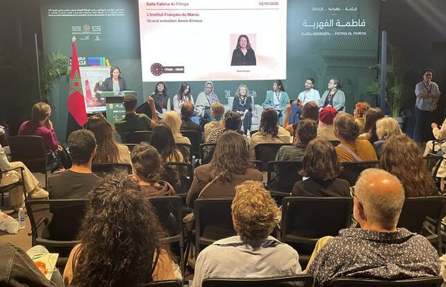

Festivals · Culture
SIEL Rabat 2027 — International Book and Publishing Fair
- Dates
- Dates TBA
- Venue
- OLM Souissi
- Location
- Rabat, Morocco
- Format
- In-person
- Category
- Culture
- Industry
- International book fair
- Organiser
- Ministère de la Jeunesse, de la Culture et de la Communication
- Expected attendance
- 502,000
- Official website
- https://siel.ma/fr/accueil/
About
The 31st edition ran 1–10 May 2026 at OLM Souissi, Rabat (official site: 'من 1 إلى 10 مايو 2026' and 'la 31e édition du SIEL s’est déroulée à l’OLM Souissi du 1er au 10 mai'). Official pages checked on 24 Nov 2026 do not yet publish 2027 dates. Record is the expected 32nd edition, dates TBA. Morocco dates are local (Africa/Casablanca; typically UTC+1, with occasional Ramadan clock changes).
Topics: publishing, literature, books, translation.
Official SIEL home page (fetched 24 Nov 2026), in coverage of the 31st edition, quotes the Ministry of Culture welcoming a record '502 000 visiteurs' at the 2026 fair. Used that official last-edition figure.